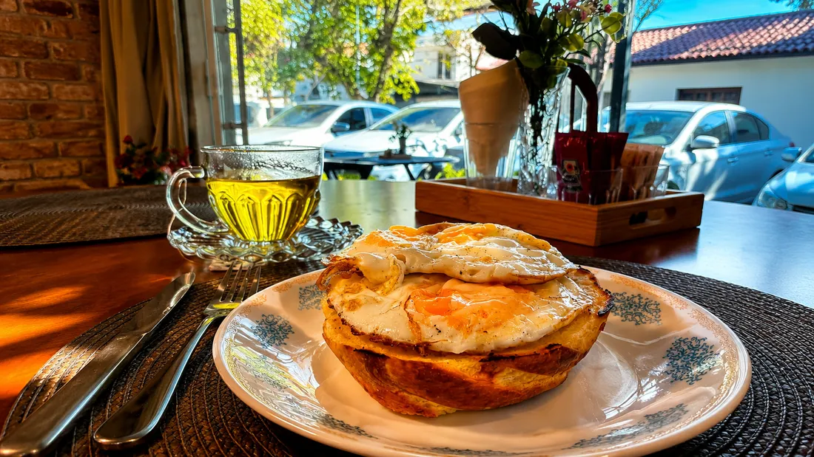

desde Santa Isabel01
Café com prosa.
Salgados · doces · aconchego
role para descobrir
Salgados · doces · aconchego
O Café Anis é aquele tipo de lugar que combina com uma pausa no meio do dia. Um café, uma conversa, alguma coisa gostosa e mais alguns minutos sem olhar para o relógio.
Uma experiência simples, próxima e acolhedora — do jeito que um café de cidade deveria ser.

Cappuccino cremoso, salgados, doces e opções para aquela vontade que aparece no meio do caminho. Escolha o seu e deixe o resto acontecer.
Arraste para os lados (ou use o rato) para explorar.



Café Anis · Santa Isabel
Explore o ambiente em 360° e descubra cada cantinho antes mesmo de chegar.